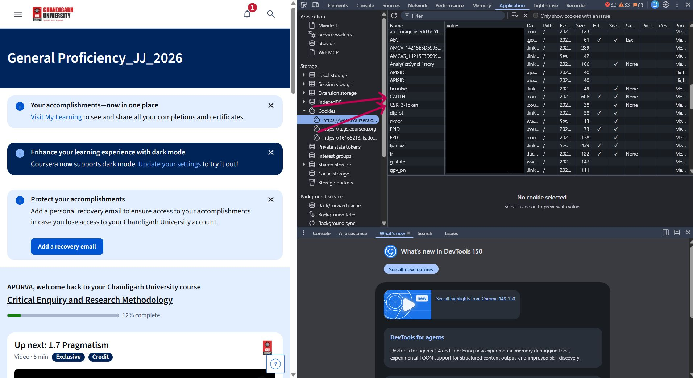

Coursera Automation
By Raushan Raj.
Set up the automation tool in just a few minutes. Follow the steps below carefully.

Step 0 - Make sure you have python installed on your PC. As installing it is not a part of this tool.
Refer to this video for python installation - YouTube
Step 1 — Download the Tool
Download the project from GitHub .
Make sure Python is already installed on your computer.
Step 2 — Copy Coursera Cookies
Login to your Coursera account.
- Right click anywhere on the page.
- Click Inspect.
- Open the Application tab.
- Select Cookies → coursera.org.
- Copy these cookie values:
- CAUTH
- CSRF3-Token
- __204u

If you are using mac you don't need to save create config.json by own, the command will automatically fetch it from chrome.
Step 3 — Create Configuration File
Create the following folder if it doesn't already exist:
C:\Users\YourUsername\.skip-course
Inside this folder, create a file named:
config.json
Paste the generated JSON into this file and save it.
Step 4 — Extract Course Slug
Paste your Coursera course URL below.
Step 5 — Install Requirements
Open the downloaded project in VS Code.
Run:
pip install -r requirements.txt
Once the installation finishes,
press Ctrl + C if the terminal
continues running.
In case you get stuck at pyproject.toml process, kill the process by running ctrl + c.
Step 6 — Run the Tool
Run:
python -m apurva.main course-slug
Example:
Note: After running if you get module not found error you can download that module by following command -
pip install module-name
Or
python3 -m pip install module-name
python -m apurva.main machine-learning